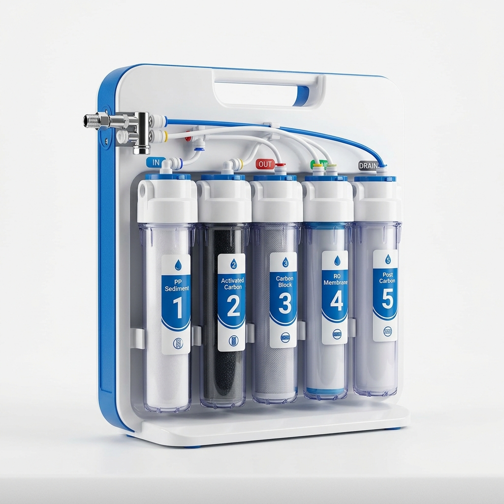
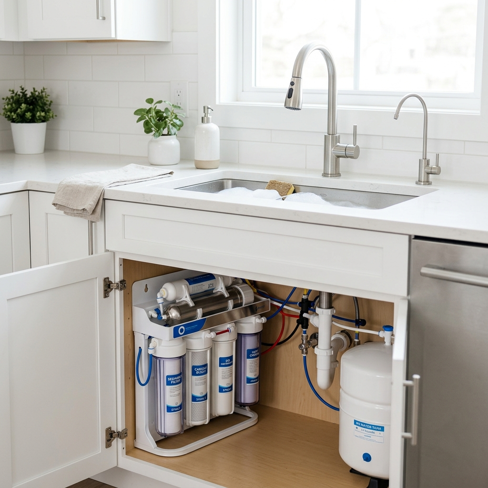
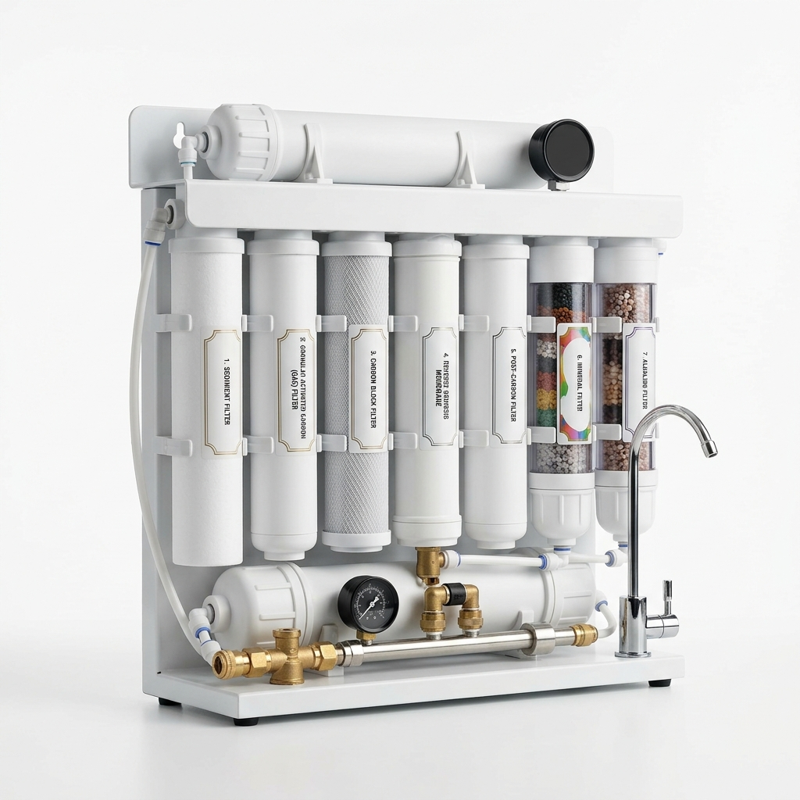
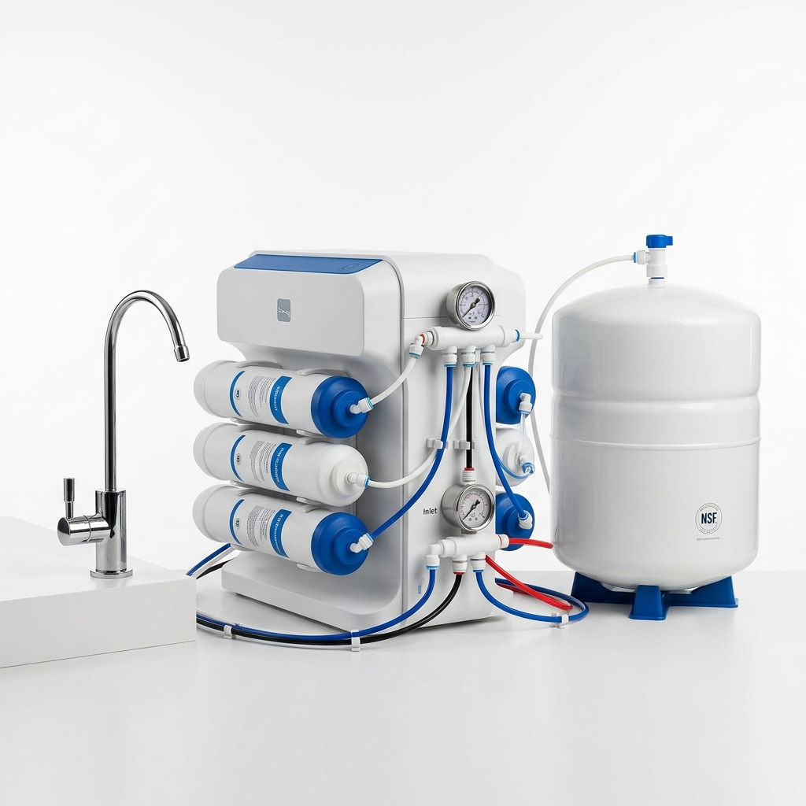
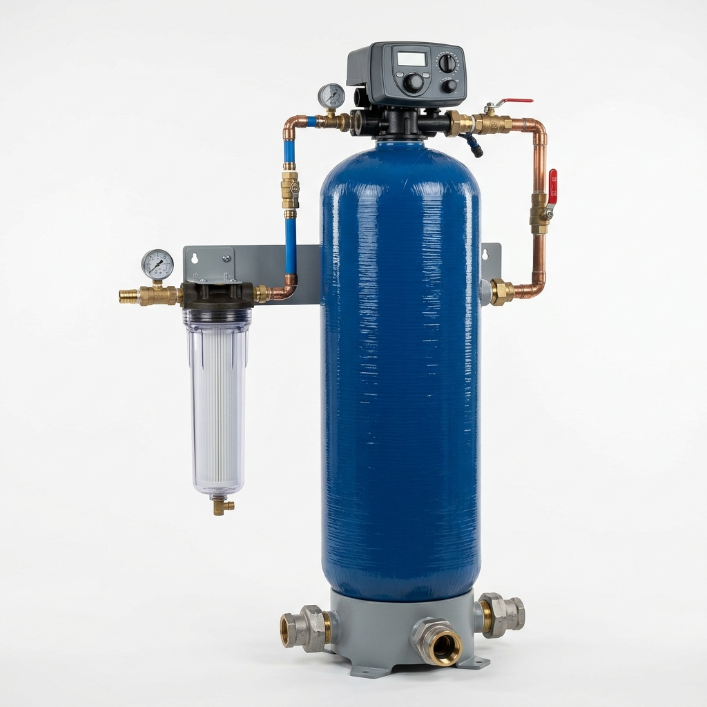

الأكثر طلباً

صيانة وبيع جميع أنواع فلاتر المياه المنزلية والصناعية والمركزية في كل مناطق عمّان، مع خدمة تركيب فلاتر مياه سريعة وضمان شامل، ليصل لك ماء نقي وآمن في كل قطرة.

حلول تنقية متكاملة لكل منزل، نختار لك الأنسب حسب جودة المياه واحتياج عائلتك.




نلتزم بأعلى معايير الجودة والخدمة لنكون خيارك الأول في تنقية المياه بعمّان.
فريق فني محترف ينجز تركيب فلاتر مياه في نفس اليوم وبأقل إزعاج لمنزلك.
نستخدم قطع غيار وشمعات أصلية معتمدة تضمن أداءً وعمراً أطول لفلترك.
صيانة فلاتر المياه الدورية وتذكير بمواعيد تغيير الشمعات ودعم متواصل.
تواصل مع مدار التطوير لتكنولوجيا المياه اليوم — خبراؤنا يساعدونك في اختيار الفلتر المثالي لمنزلك أو منشأتك في كل مناطق عمّان، بدون أي التزام.